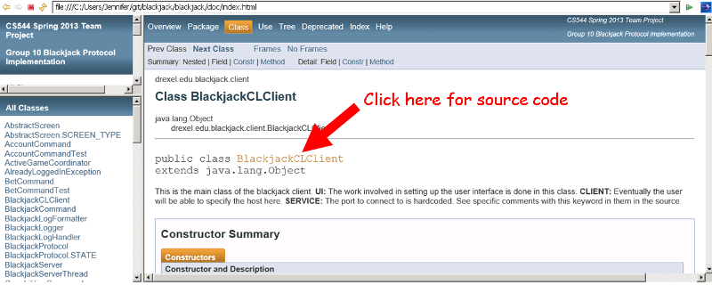

As per assignment requirements, we have marked code that implements one of the five protocol requirements (STATEFUL, CONCURRENT, SERVICE, CLIENT, UI) in both class and method javadoc-style comments, but also at places in inline comments in the code. Comments are identified with the keyword in all caps. Classes that are involved in each of the requirements are linked below:
We have also included a few extra keywords in comments, for identifying additional concepts and where they are implemented (SECURITY, EXTRACREDIT).
Confidentiality is provided through the same TLS encryption later that supports data integrity.
Non-repudiation is not specifically addressed in the protocol or its implementation.
Note that though it is not obvious in the web pages, you can actually navigate directly from the javadocs page to the source code itself. See the screenshot below for where you would click to do so.

You can similarly click on method names to see their source code, and so forth, from the HTML. @author Jennifer Lautenschlager @author Constantine Lazarakis @author Carol Greco @author Duc Anh Nguyen @version 1.0